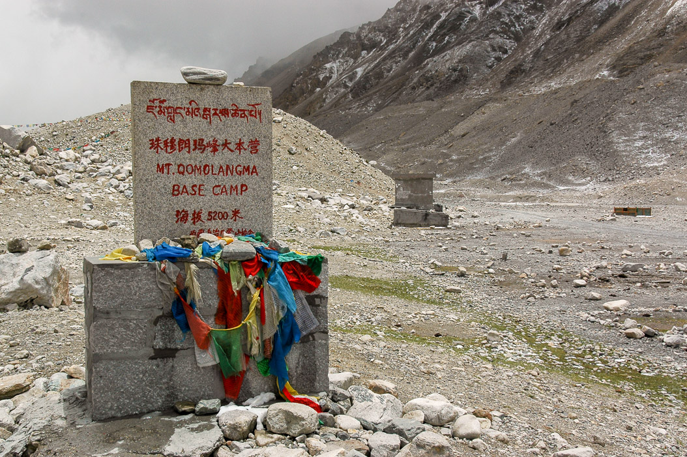

Am nächsten Morgen und nach einer verfrorenen Nacht sind wir
endlich Richtung Mt Everest aufgebrochen. Schon in der Nacht hatte
es passenderweise angefangen zu regnen. So fuhren wir unter einer
undurchdringlich weißen Wolkendecke her, die man nur als typisch
deutsch bezeichnen kann. Nach einem chinesischen Checkpoint bogen
wir von der guten Straße ab.
Es folgten 100km auf Erd- und Schotterpisten, die sich in
unzähligen Serpentinen die Berge hinauf und hinunter
schlängelten. Nach ein paar Höhenmetern fing es auch noch an zu
schneien. Beim Erreichen eines weiteren Passes, der für seinen
tollen Blick auf den Himalaya inkl. Mt. Everest berühmt sein soll,
befanden wir uns bereits in der erwähnten Wolkendecke und konnten
keine 50m weit sehen.
Nachdem wir drei Stunden ordentlich durchgeschüttelt worden
sind, kam endlich das Rombuk-Kloster in Sicht. Das Kloster ist
winzig, beherbergt an die 30 Mönche und Nonnen und hat in der
Gebetshalle eine deutsche Kuckucksuhr hängen.
Ein paar Kilometer weiter erreichten wir die Hüttenstatt, die
ursprünglich zu einem der Basislager gehörte. In Zelten mit
schönen Namen wie "Holiday Inn Mt Everest" konnte man Yak-Tee
trinken und notfalls auch übernachten. Leider war an der Stelle,
wo eigentlich der höchste Berg der Welt sein sollte, nur ein
großes, weißes Stück Himmel.
Wir haben uns natürlich trotzdem auf den Weg zum Basislager
gemacht, das in 4km Entfernung auf 5200m Höhe liegt. Der Weg zog
sich und aber die Wolken verzogen sich auch langsam. Nur ging es
nach einer Weile nicht mehr weiter, weil wir an einen Fluß
gelangten. Nach einer Rast gesellte sich ein weiterer verwirrter
Wanderer zu uns. Nachdem wir keinen Übergang finden konnten,
kehrten wir um, da wir ein Stückchen weiter hinten ein paar
militärische Gebäude passiert hatten.
Es stellte sich heraus, dass wir das Basislager einfach
übersehen hatten. Es stand nämlich kein einziges Zelt mehr dort.
Vielleicht lag es an der Saison, vielleicht waren die Zelte auch
in den zwei anderen Basislagern, die noch folgen sollten.
Insgesamt war dieser Ort reichlich unspektakulär.

Auf dem Rückweg hatten sich die Wolken aber endlich so weit
verzogen, dass wir Mutmaßungen anstellen konnten, welcher der
Bergrümpfe, die links und rechts des Tals sichtbar wurden, zum
Everest gehören könnte. Wir hatten uns schon fuer den linken
entschieden, als plötzlich die Wolken in der Mitte aufrissen und
die Spitze des Everest freilegten; und zwar an einer so hohen
Stelle am Himmel, dass wir uns erstmal setzen mussten.
Dann mussten wir aber leider zügig weiter gehen, da unser Plan,
zu Fuß hoch und mit Pferdewagen wieder runterzukommen, nicht
aufging. Die Pferdewagen warten nur unten. Daher wurde aus unserem
Spaziergang ein vierstündiger Marsch.
Auf der Rückfahrt nach Shegar hatte sich das Wetter so weit
gebessert, dass die Landschaft, obwohl wir dieselbe Straße nahmen,
nicht mehr wiederzuerkennen war. Eine gewaltige Szenerie zeigte
sich uns bei der Durchquerung fruchtbarer Täler und dem
nochmaligen Erklettern der Serpentinen. Vom Pass aus konnten wir
ein endloses Feld nackter, brauner Berge sehen, die am Horizont
von den schneebedeckten Gipfeln des Himalaya und einigen
Achttausender überragt wurden.